分析时间范围: 2015-12-25 至 2026-05-08
检验方法: 简易ADF单位根检验（自实现）
预处理版本: 原始值、一阶差分、百分比变化
| 列ID | 列名 | 样本数 | 均值 | ADF t统计量 | 检验结果 |
|---|---|---|---|---|---|
| ID02017483 | 铁矿石：进口：库存：华北地区：45个港口（周度） | 3,788 | 4147.6514 | -1.8792 | 非平稳 |
| ID02017488 | 铁矿石：进口：库存：华南地区：45个港口（周度） | 3,788 | 950.6258 | -2.4355 | 非平稳 |
| ID02017501 | 铁矿石：进口：库存：长江沿江地区：45个港口（周度） | 3,788 | 2034.7408 | -2.6520 | 平稳 (90%) |
| ID00414945 | 铁矿石：进口：库存：华东地区：45个港口（周度） | 3,788 | 5533.7478 | -1.4777 | 非平稳 |
| ID00186052 | 铁矿石：进口：库存：45个港口（周度） | 3,788 | 13372.6543 | -1.5373 | 非平稳 |
| ID00186278 | 块矿：库存：45个港口（周度） | 3,788 | 1823.7825 | -2.0615 | 非平稳 |
| ID01135139 | 粗粉：进口：库存：45个港口（周度） | 3,788 | 10134.1648 | -1.4191 | 非平稳 |
| ID00186491 | 铁精粉：库存：45个港口（周度） | 3,788 | 948.0946 | -2.2175 | 非平稳 |
| ID00186318 | 球团矿：进口：库存：45个港口（周度） | 3,788 | 466.6124 | -1.5613 | 非平稳 |
| ID01512800 | 块矿：进口：库存：47个港口（周度） | 1,604 | 1857.5260 | -2.4953 | 非平稳 |
| ID01868329 | 粗粉：库存：47个港口（周度） | 1,359 | 11140.1903 | -1.8212 | 非平稳 |
| ID01512783 | 铁精粉：进口：库存：47个港口（周度） | 1,604 | 1170.0990 | -1.3418 | 非平稳 |
| ID01512793 | 球团矿：进口：库存：47个港口（周度） | 1,604 | 549.4850 | -2.0114 | 非平稳 |
| ID01512786 | 铁矿石：进口：库存：47个港口（周度） | 1,604 | 14784.6491 | -1.7235 | 非平稳 |
| ID01517120 | PB粉：港口库存：华东地区：青岛港：明细（周度） | 3,242 | 169.1363 | -2.8525 | 平稳 (90%) |
| ID01517067 | PB粉：港口库存：华北地区：曹妃甸港：明细（周度） | 3,242 | 118.1247 | -4.6171 | 平稳 (99%) |
| ID01516906 | PB粉：港口库存：长江沿江地区：江阴港：明细（周度） | 3,242 | 44.7569 | -5.1304 | 平稳 (99%) |
| ID01516560 | PB块：港口库存：华东地区：青岛港：明细（周度） | 3,242 | 81.4504 | -3.5862 | 平稳 (99%) |
| ID01516505 | PB块：港口库存：华北地区：曹妃甸港：明细（周度） | 3,242 | 24.2193 | -4.4189 | 平稳 (99%) |
| ID01516418 | PB块：港口库存：长江沿江地区：江阴港：明细（周度） | 3,242 | 12.8490 | -6.6012 | 平稳 (99%) |
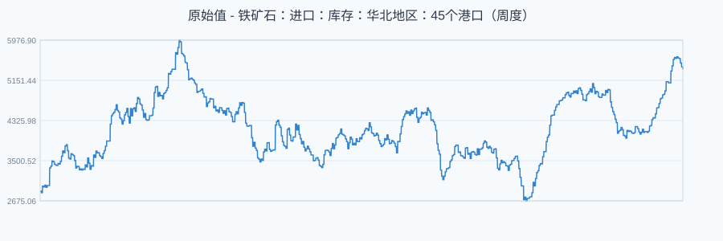
ADF t统计量: -1.8792 | 样本数: 3,788 | 均值: 4147.6514
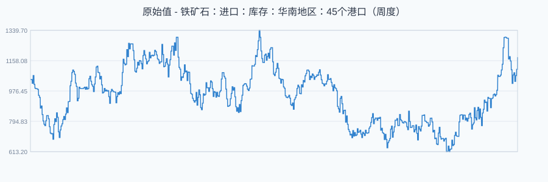
ADF t统计量: -2.4355 | 样本数: 3,788 | 均值: 950.6258
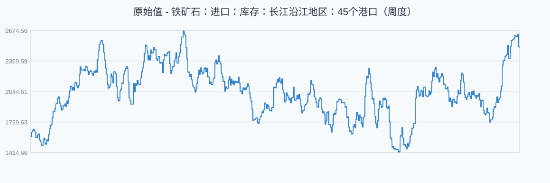
ADF t统计量: -2.6520 | 样本数: 3,788 | 均值: 2034.7408
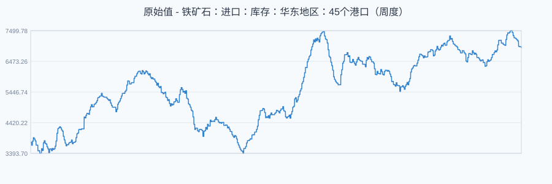
ADF t统计量: -1.4777 | 样本数: 3,788 | 均值: 5533.7478
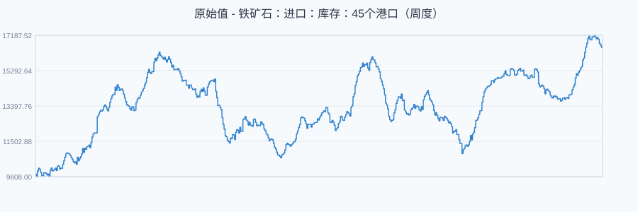
ADF t统计量: -1.5373 | 样本数: 3,788 | 均值: 13372.6543
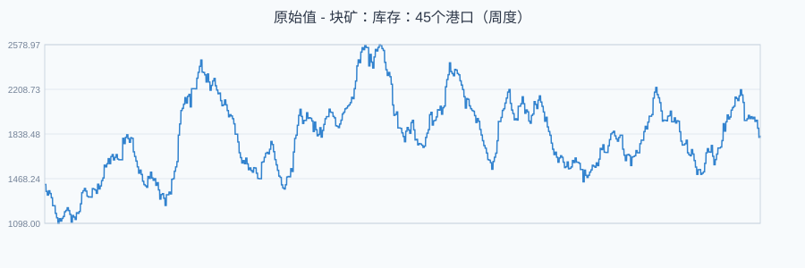
ADF t统计量: -2.0615 | 样本数: 3,788 | 均值: 1823.7825
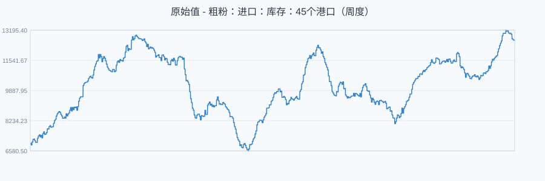
ADF t统计量: -1.4191 | 样本数: 3,788 | 均值: 10134.1648
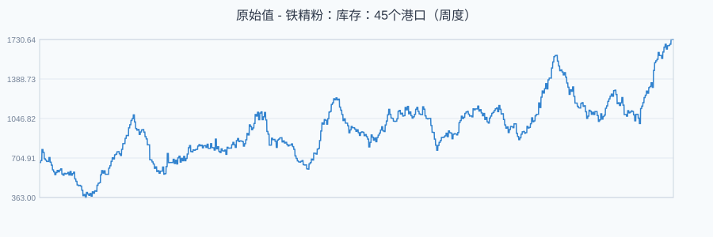
ADF t统计量: -2.2175 | 样本数: 3,788 | 均值: 948.0946
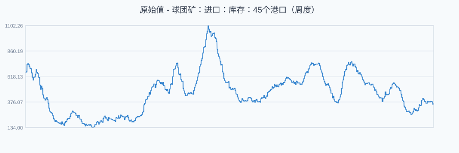
ADF t统计量: -1.5613 | 样本数: 3,788 | 均值: 466.6124
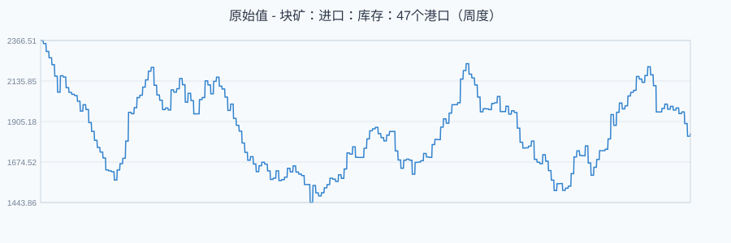
ADF t统计量: -2.4953 | 样本数: 1,604 | 均值: 1857.5260
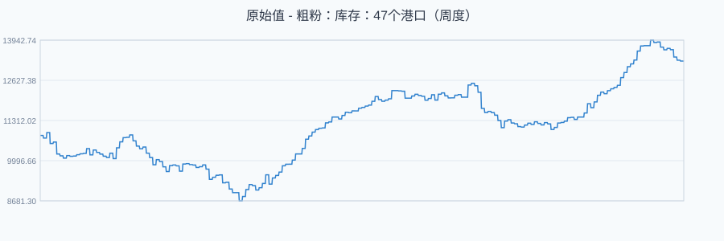
ADF t统计量: -1.8212 | 样本数: 1,359 | 均值: 11140.1903
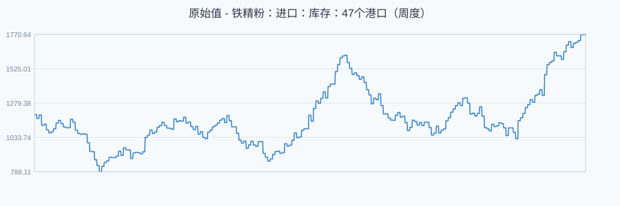
ADF t统计量: -1.3418 | 样本数: 1,604 | 均值: 1170.0990
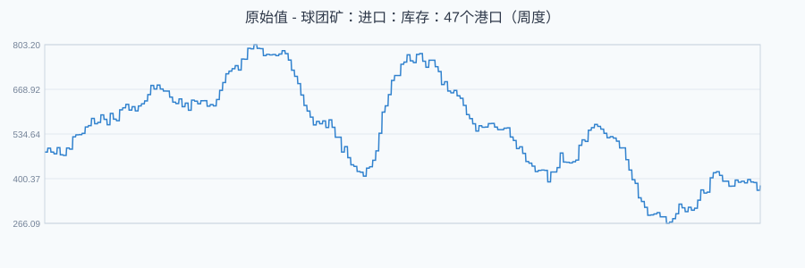
ADF t统计量: -2.0114 | 样本数: 1,604 | 均值: 549.4850
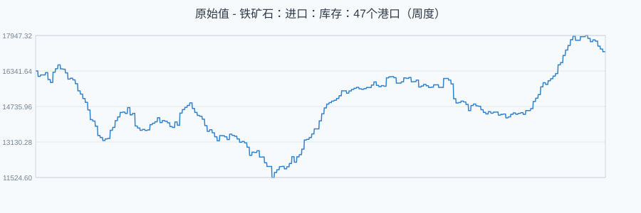
ADF t统计量: -1.7235 | 样本数: 1,604 | 均值: 14784.6491
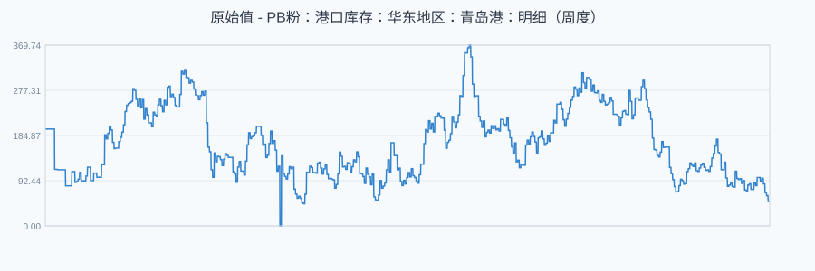
ADF t统计量: -2.8525 | 样本数: 3,242 | 均值: 169.1363
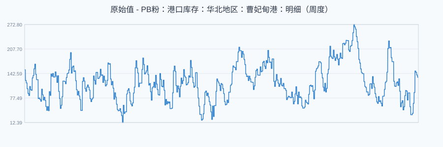
ADF t统计量: -4.6171 | 样本数: 3,242 | 均值: 118.1247
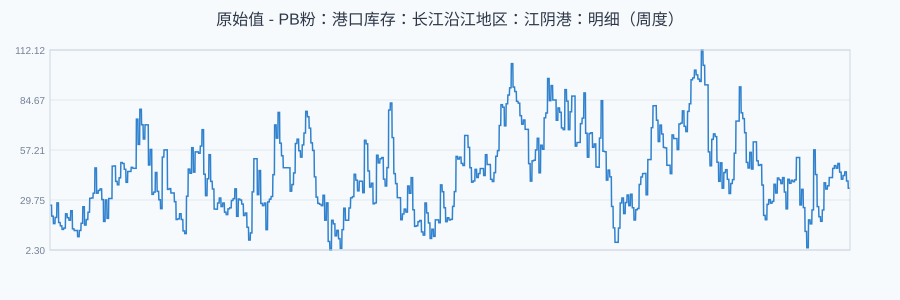
ADF t统计量: -5.1304 | 样本数: 3,242 | 均值: 44.7569
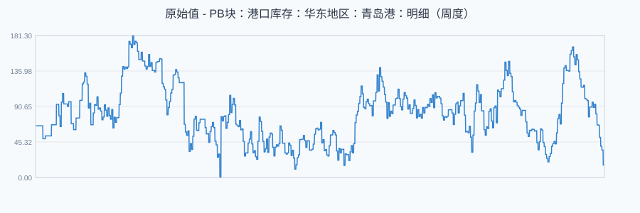
ADF t统计量: -3.5862 | 样本数: 3,242 | 均值: 81.4504
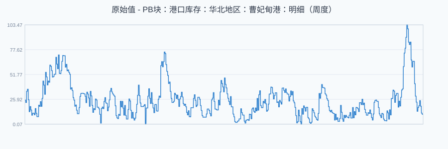
ADF t统计量: -4.4189 | 样本数: 3,242 | 均值: 24.2193
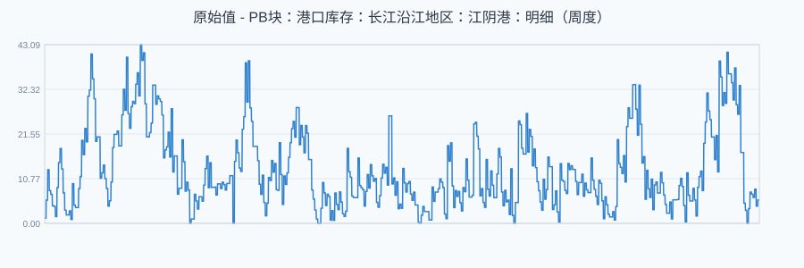
ADF t统计量: -6.6012 | 样本数: 3,242 | 均值: 12.8490
| 列ID | 列名 | 样本数 | 均值 | ADF t统计量 | 检验结果 |
|---|---|---|---|---|---|
| ID02017483 | 铁矿石：进口：库存：华北地区：45个港口（周度） | 3,787 | 0.6609 | -30.7573 | 平稳 (99%) |
| ID02017488 | 铁矿石：进口：库存：华南地区：45个港口（周度） | 3,787 | 0.0355 | -30.6413 | 平稳 (99%) |
| ID02017501 | 铁矿石：进口：库存：长江沿江地区：45个港口（周度） | 3,787 | 0.2421 | -30.7477 | 平稳 (99%) |
| ID00414945 | 铁矿石：进口：库存：华东地区：45个港口（周度） | 3,787 | 0.8317 | -30.7798 | 平稳 (99%) |
| ID00186052 | 铁矿石：进口：库存：45个港口（周度） | 3,787 | 1.7913 | -30.7937 | 平稳 (99%) |
| ID00186278 | 块矿：库存：45个港口（周度） | 3,787 | 0.1071 | -30.7475 | 平稳 (99%) |
| ID01135139 | 粗粉：进口：库存：45个港口（周度） | 3,787 | 1.4823 | -30.7922 | 平稳 (99%) |
| ID00186491 | 铁精粉：库存：45个港口（周度） | 3,787 | 0.2795 | -30.7930 | 平稳 (99%) |
| ID00186318 | 球团矿：进口：库存：45个港口（周度） | 3,787 | -0.0776 | -30.7440 | 平稳 (99%) |
| ID01512800 | 块矿：进口：库存：47个港口（周度） | 1,603 | -0.3300 | -20.0241 | 平稳 (99%) |
| ID01868329 | 粗粉：库存：47个港口（周度） | 1,358 | 1.7862 | -18.5119 | 平稳 (99%) |
| ID01512783 | 铁精粉：进口：库存：47个港口（周度） | 1,603 | 0.3508 | -20.1049 | 平稳 (99%) |
| ID01512793 | 球团矿：进口：库存：47个港口（周度） | 1,603 | -0.0625 | -20.0186 | 平稳 (99%) |
| ID01512786 | 铁矿石：进口：库存：47个港口（周度） | 1,603 | 0.5511 | -20.1739 | 平稳 (99%) |
| ID01517120 | PB粉：港口库存：华东地区：青岛港：明细（周度） | 3,241 | -0.0457 | -28.4396 | 平稳 (99%) |
| ID01517067 | PB粉：港口库存：华北地区：曹妃甸港：明细（周度） | 3,241 | -0.0061 | -28.4351 | 平稳 (99%) |
| ID01516906 | PB粉：港口库存：长江沿江地区：江阴港：明细（周度） | 3,241 | 0.0029 | -28.4352 | 平稳 (99%) |
| ID01516560 | PB块：港口库存：华东地区：青岛港：明细（周度） | 3,241 | -0.0154 | -28.4409 | 平稳 (99%) |
| ID01516505 | PB块：港口库存：华北地区：曹妃甸港：明细（周度） | 3,241 | -0.0046 | -28.4348 | 平稳 (99%) |
| ID01516418 | PB块：港口库存：长江沿江地区：江阴港：明细（周度） | 3,241 | 0.0014 | -28.4358 | 平稳 (99%) |
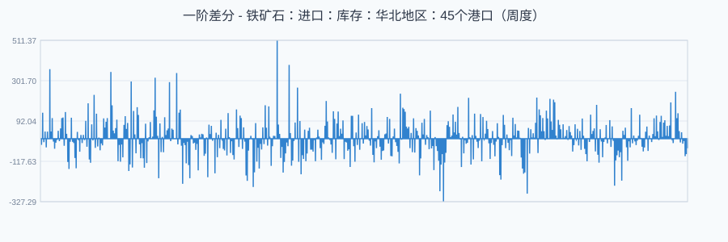
ADF t统计量: -30.7573 | 样本数: 3,787 | 均值: 0.6609
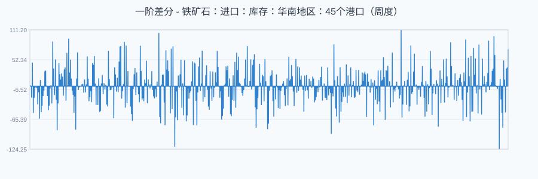
ADF t统计量: -30.6413 | 样本数: 3,787 | 均值: 0.0355
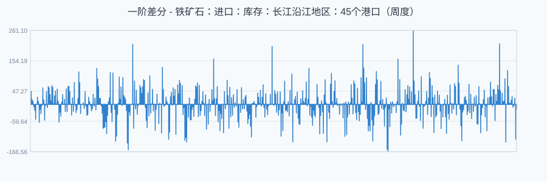
ADF t统计量: -30.7477 | 样本数: 3,787 | 均值: 0.2421
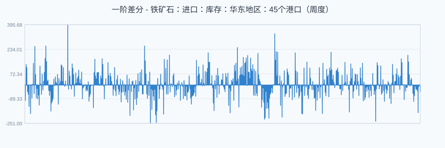
ADF t统计量: -30.7798 | 样本数: 3,787 | 均值: 0.8317
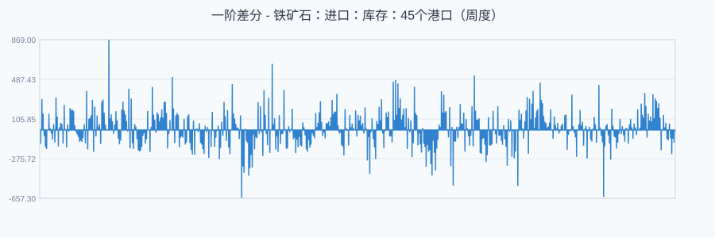
ADF t统计量: -30.7937 | 样本数: 3,787 | 均值: 1.7913
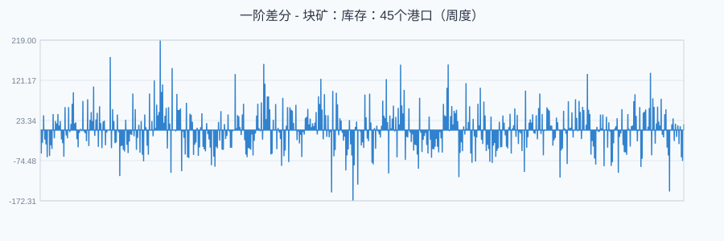
ADF t统计量: -30.7475 | 样本数: 3,787 | 均值: 0.1071
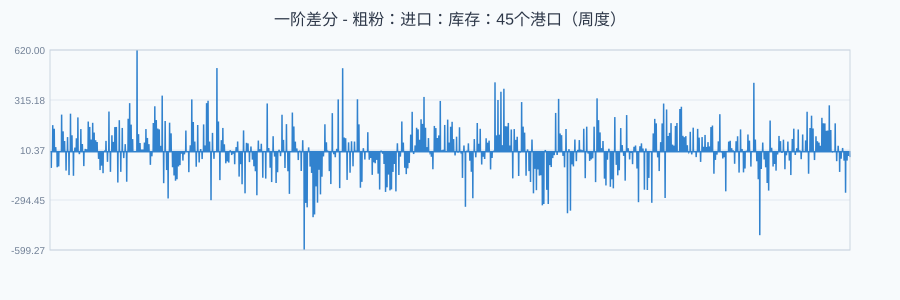
ADF t统计量: -30.7922 | 样本数: 3,787 | 均值: 1.4823
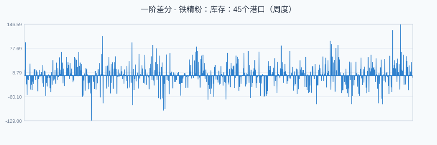
ADF t统计量: -30.7930 | 样本数: 3,787 | 均值: 0.2795
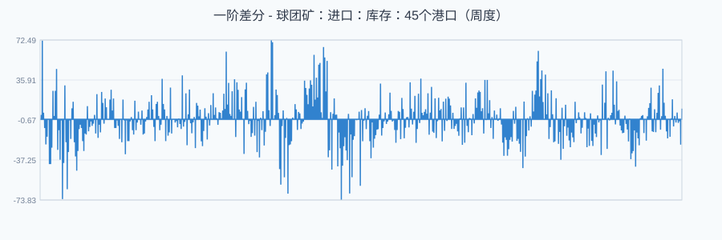
ADF t统计量: -30.7440 | 样本数: 3,787 | 均值: -0.0776
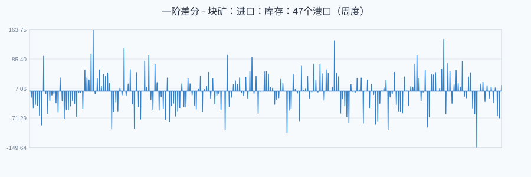
ADF t统计量: -20.0241 | 样本数: 1,603 | 均值: -0.3300
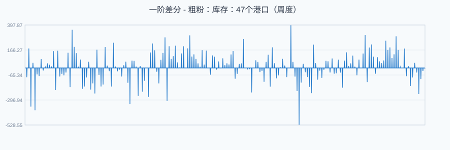
ADF t统计量: -18.5119 | 样本数: 1,358 | 均值: 1.7862
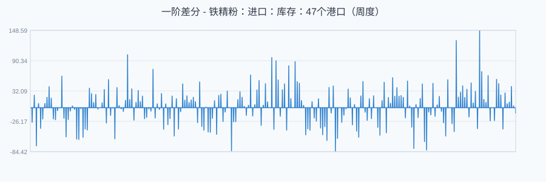
ADF t统计量: -20.1049 | 样本数: 1,603 | 均值: 0.3508
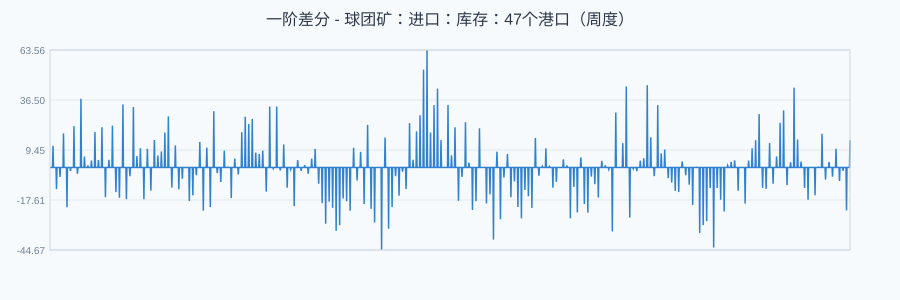
ADF t统计量: -20.0186 | 样本数: 1,603 | 均值: -0.0625
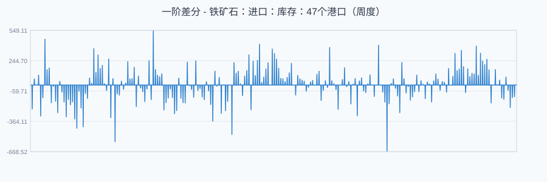
ADF t统计量: -20.1739 | 样本数: 1,603 | 均值: 0.5511
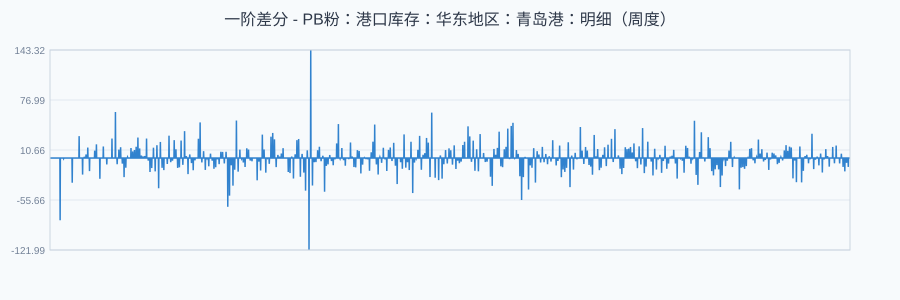
ADF t统计量: -28.4396 | 样本数: 3,241 | 均值: -0.0457
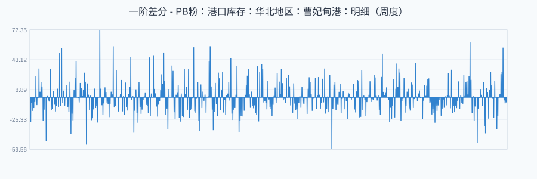
ADF t统计量: -28.4351 | 样本数: 3,241 | 均值: -0.0061
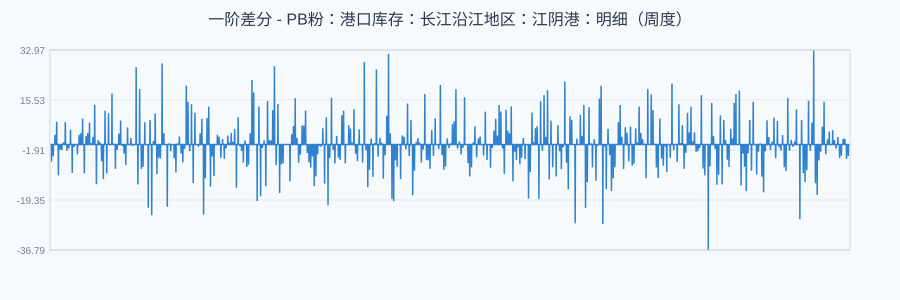
ADF t统计量: -28.4352 | 样本数: 3,241 | 均值: 0.0029
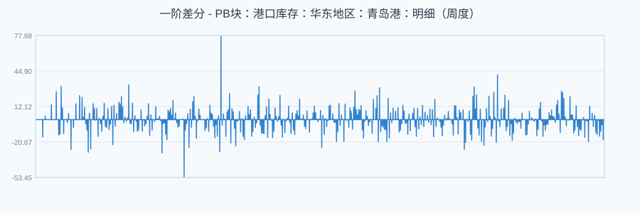
ADF t统计量: -28.4409 | 样本数: 3,241 | 均值: -0.0154
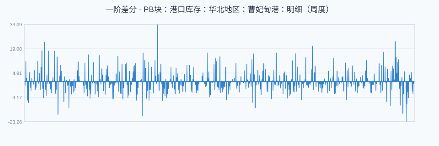
ADF t统计量: -28.4348 | 样本数: 3,241 | 均值: -0.0046
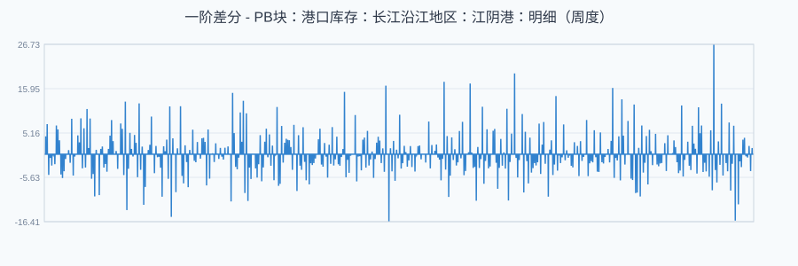
ADF t统计量: -28.4358 | 样本数: 3,241 | 均值: 0.0014
| 列ID | 列名 | 样本数 | 均值 | ADF t统计量 | 检验结果 |
|---|---|---|---|---|---|
| ID02017483 | 铁矿石：进口：库存：华北地区：45个港口（周度） | 3,787 | 0.0002 | -30.7762 | 平稳 (99%) |
| ID02017488 | 铁矿石：进口：库存：华南地区：45个港口（周度） | 3,787 | 0.0001 | -30.6821 | 平稳 (99%) |
| ID02017501 | 铁矿石：进口：库存：长江沿江地区：45个港口（周度） | 3,787 | 0.0002 | -30.7600 | 平稳 (99%) |
| ID00414945 | 铁矿石：进口：库存：华东地区：45个港口（周度） | 3,787 | 0.0002 | -30.7988 | 平稳 (99%) |
| ID00186052 | 铁矿石：进口：库存：45个港口（周度） | 3,787 | 0.0002 | -30.8109 | 平稳 (99%) |
| ID00186278 | 块矿：库存：45个港口（周度） | 3,787 | 0.0001 | -30.7562 | 平稳 (99%) |
| ID01135139 | 粗粉：进口：库存：45个港口（周度） | 3,787 | 0.0002 | -30.8141 | 平稳 (99%) |
| ID00186491 | 铁精粉：库存：45个港口（周度） | 3,787 | 0.0004 | -30.7878 | 平稳 (99%) |
| ID00186318 | 球团矿：进口：库存：45个港口（周度） | 3,787 | 0.0000 | -30.7336 | 平稳 (99%) |
| ID01512800 | 块矿：进口：库存：47个港口（周度） | 1,603 | -0.0001 | -20.0085 | 平稳 (99%) |
| ID01868329 | 粗粉：库存：47个港口（周度） | 1,358 | 0.0002 | -18.4975 | 平稳 (99%) |
| ID01512783 | 铁精粉：进口：库存：47个港口（周度） | 1,603 | 0.0003 | -20.0816 | 平稳 (99%) |
| ID01512793 | 球团矿：进口：库存：47个港口（周度） | 1,603 | -0.0000 | -19.9725 | 平稳 (99%) |
| ID01512786 | 铁矿石：进口：库存：47个港口（周度） | 1,603 | 0.0000 | -20.1497 | 平稳 (99%) |
| ID01517120 | PB粉：港口库存：华东地区：青岛港：明细（周度） | 3,234 | 0.0004 | -28.4119 | 平稳 (99%) |
| ID01517067 | PB粉：港口库存：华北地区：曹妃甸港：明细（周度） | 3,241 | 0.0042 | -28.5352 | 平稳 (99%) |
| ID01516906 | PB粉：港口库存：长江沿江地区：江阴港：明细（周度） | 3,241 | 0.0091 | -28.5873 | 平稳 (99%) |
| ID01516560 | PB块：港口库存：华东地区：青岛港：明细（周度） | 3,234 | 0.0017 | -28.4377 | 平稳 (99%) |
| ID01516505 | PB块：港口库存：华北地区：曹妃甸港：明细（周度） | 3,241 | 0.1090 | -28.4857 | 平稳 (99%) |
| ID01516418 | PB块：港口库存：长江沿江地区：江阴港：明细（周度） | 3,192 | 0.0633 | -28.4149 | 平稳 (99%) |
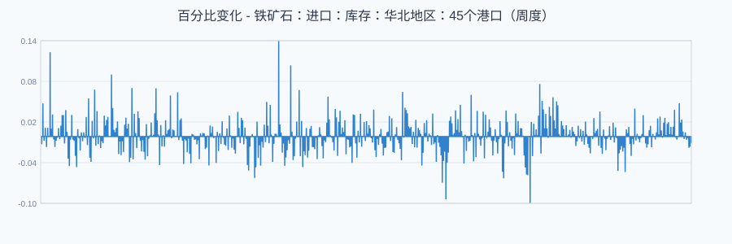
ADF t统计量: -30.7762 | 样本数: 3,787 | 均值: 0.0002
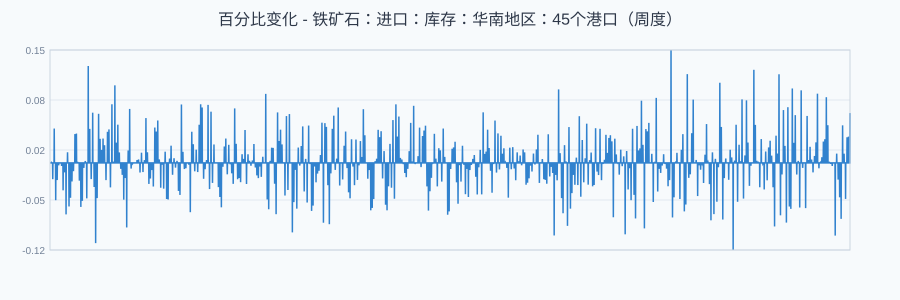
ADF t统计量: -30.6821 | 样本数: 3,787 | 均值: 0.0001
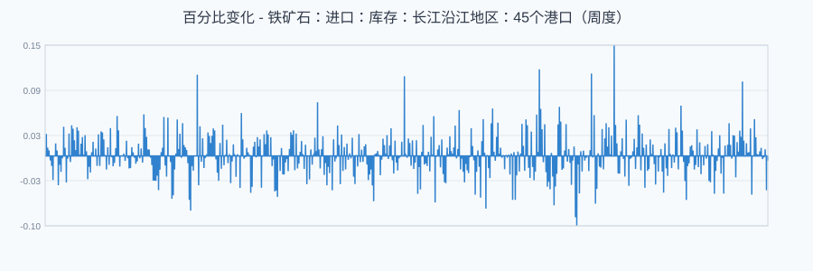
ADF t统计量: -30.7600 | 样本数: 3,787 | 均值: 0.0002
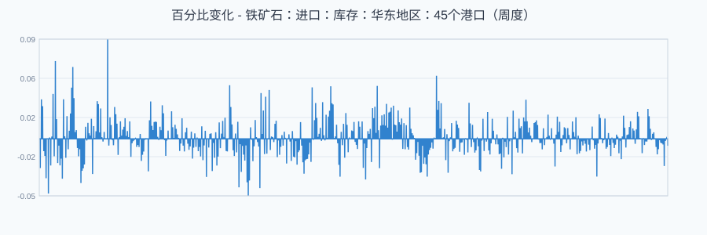
ADF t统计量: -30.7988 | 样本数: 3,787 | 均值: 0.0002
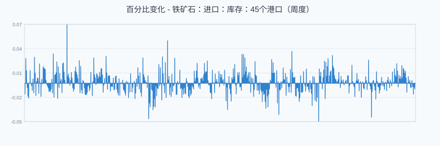
ADF t统计量: -30.8109 | 样本数: 3,787 | 均值: 0.0002
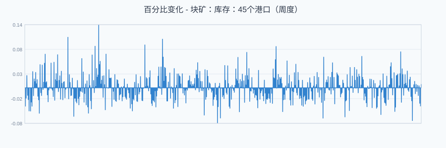
ADF t统计量: -30.7562 | 样本数: 3,787 | 均值: 0.0001
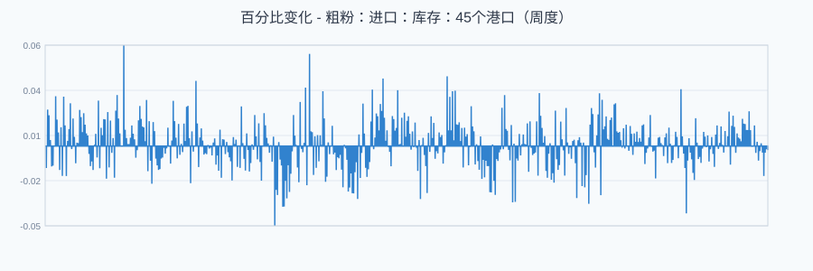
ADF t统计量: -30.8141 | 样本数: 3,787 | 均值: 0.0002
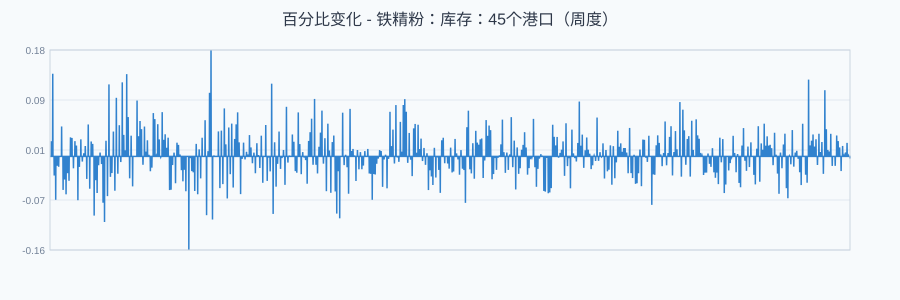
ADF t统计量: -30.7878 | 样本数: 3,787 | 均值: 0.0004
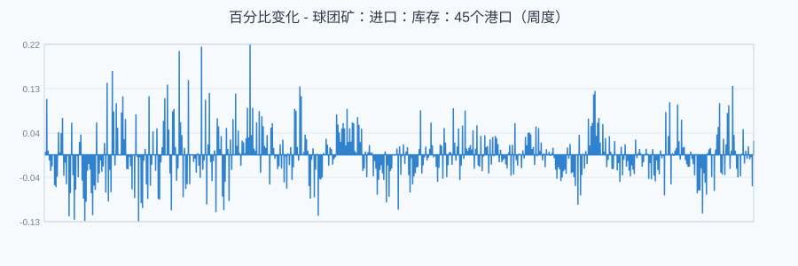
ADF t统计量: -30.7336 | 样本数: 3,787 | 均值: 0.0000
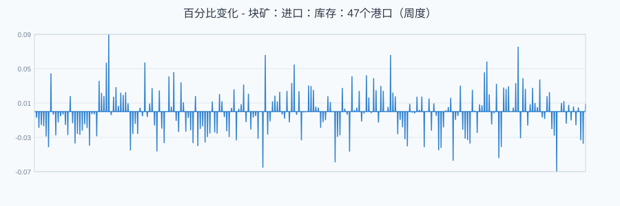
ADF t统计量: -20.0085 | 样本数: 1,603 | 均值: -0.0001
ADF t统计量: -18.4975 | 样本数: 1,358 | 均值: 0.0002
ADF t统计量: -20.0816 | 样本数: 1,603 | 均值: 0.0003
ADF t统计量: -19.9725 | 样本数: 1,603 | 均值: -0.0000
ADF t统计量: -20.1497 | 样本数: 1,603 | 均值: 0.0000
ADF t统计量: -28.4119 | 样本数: 3,234 | 均值: 0.0004
ADF t统计量: -28.5352 | 样本数: 3,241 | 均值: 0.0042
ADF t统计量: -28.5873 | 样本数: 3,241 | 均值: 0.0091
ADF t统计量: -28.4377 | 样本数: 3,234 | 均值: 0.0017
ADF t统计量: -28.4857 | 样本数: 3,241 | 均值: 0.1090
ADF t统计量: -28.4149 | 样本数: 3,192 | 均值: 0.0633